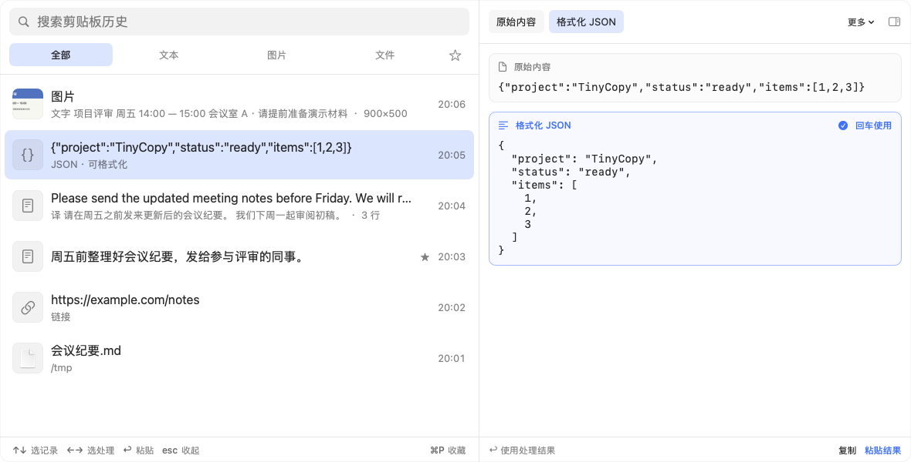
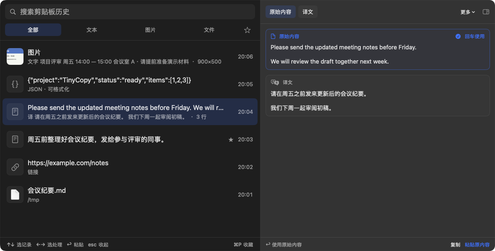

为 macOS 原生打造的
剪贴板历史工具Clipboard history,
made natively for macOS
记录复制过的文字、图片和文件，按下快捷键即可找回，粘贴回原来的应用。复制的文件或文件夹可以只粘贴路径；JSON、编码文本、外语和截图里的文字，也能先处理再粘贴。 Keep the text, images and files you copy, find them again with one shortcut, and paste them back into the app you were in. A copied file or folder can be pasted as its path; JSON, encoded text, foreign languages and the text in screenshots can be converted before you paste.




从图片中提取文字，原图和识别结果同时保留。Text is extracted from an image, and the image is kept too.
复制文件或文件夹后，按左右键选到路径，回车即可粘贴。Copy a file or folder, choose its path with the arrow keys, and Return pastes it.
原文和格式化结果并排显示，选中哪份就粘贴哪份。The original and the formatted JSON side by side: paste whichever you pick.
外语正文自动翻译，按左右键选择原文或译文。Foreign text is translated; ← and → choose the original or the translation.
⇧⌘V 打开，↑↓ 选记录，←→ 选内容，↩ 粘贴。to open, ↑↓ to pick a record, ←→ to pick a version, ↩ to paste.
功能Features
轻点截图可放大查看，左右拖动浏览。Tap a screenshot to see it larger and drag to look around.
以下截图均来自应用本身，使用示例内容；界面目前为中文。Screenshots from the app itself, with sample content. The interface is in Chinese for now.
历史、搜索与收藏History, search and favorites
文字、富文本、图片和文件都会记录，重启后依然保留；重复复制的内容移到顶部。Text, rich text, images and files are kept, through restarts too; copying something again moves it to the top.
- 按文本、图片、文件筛选，或只看收藏。Filter by text, images or files, or show only favorites.
- 搜索同时覆盖识别出的文字、译文和解码结果。Search also covers recognized text, translations and decoded content.
- 常用内容按 ⌘P 收藏，不会被淘汰。Press ⌘P to keep a record as a favorite; favorites are never dropped.

文件与路径Files and paths
在 Finder 里复制文件或文件夹后，按 ←→ 选到「文件路径」，回车就把路径作为文字粘贴。一次复制多个时，每个路径占一行。Copy files or folders in Finder, then use ←→ to choose the path. Return pastes it as text, one path per line when you copied several.
- 图片、PDF 和视频显示画面，文本和代码显示文字。Images, PDFs and videos show a picture; text and code show their text.
- 图片文件可以粘贴成图片，也可以识别其中的文字或二维码；文本文件可以直接粘贴其中的文字。Paste an image file as an image, or read the text or QR code in it. A text file can be pasted as its contents.
- 文件被移动或删除时会标出。Files that were moved or deleted are marked.
JSON、解码与时间戳JSON, decoding and timestamps
格式化或压缩 JSON，保留键的顺序和数字原样；解码 JWT、Base64 和 URL 编码文本；把 Unix 时间戳转成日期。Format or minify JSON, keeping key order and numbers as written; decode JWT, Base64 and URL-encoded text; turn Unix timestamps into dates.
原始内容和结果同时显示，只有选中并确认后才会使用处理结果。The original and the result stay side by side; a result is used only when you pick it.
系统翻译Apple translation
选中外语正文即可查看原文与译文，再选择复制或粘贴哪一份。Select foreign text to see it next to its translation, then copy or paste either.
使用 macOS 系统翻译，需要 macOS 15 及以上；首次使用某种语言时可能需要下载语言包。Uses Apple translation on macOS 15 or later. A language pack may need to be downloaded on first use.
图片文字识别Text recognition
从截图、会议通知等图片中提取文字，识别结果可以搜索、复制或粘贴。Extract the text from screenshots, meeting notices and other pictures, then search, copy or paste it.
识别在本机完成，原图保留。Recognition runs on your Mac and keeps the original image.
二维码QR codes
读出图片中的二维码，或把网址生成二维码图片，直接复制或粘贴。Read the QR code in a picture, or turn a URL into a QR image to copy or paste.
识别出的链接不会自动打开。Links that are read are never opened automatically.

与系统的配合Working with macOS
- 粘贴回原来的应用Pastes where you were
- 面板不会抢走焦点，按回车即粘贴到之前的应用。需要“辅助功能”权限；未授权时内容放回剪贴板，再自行按 ⌘V。焦点在 Finder 等文件管理器的文件列表或桌面上时，也只复制不粘贴，以免变成新建文件。The panel never takes focus away, so Return pastes into the app you were in. That needs Accessibility permission; without it the content goes to the clipboard for you to press ⌘V. In a file list or on the desktop in Finder or another file manager, it only copies, so the paste does not become a new file.
- 密码不会被记录Passwords stay out
- 密码管理器等应用标记为保密或临时的内容默认不记录。Content that password managers and other apps mark as concealed or transient is skipped by default.
- 只存在这台 Mac 上Stays on this Mac
- 不需要账户，没有云同步，也不收集数据。识别和转换都使用系统框架在本机完成。No account, no cloud sync, no data collection. Recognition and conversions run on your Mac with system frameworks.
- 快捷键与菜单栏Shortcut and menu bar
- 默认 ⇧⌘V 打开，可以在设置中更换；菜单栏图标可以隐藏，也可以登录时自动启动。⇧⌘V by default, which you can change in Settings. The menu bar icon can be hidden, and TinyCopy can start at login.
- 外观Appearance
- 浅色、深色或跟随系统；窗口位置与大小会被记住。Light, dark or following the system; the window keeps its place and size.
- 检查更新Updates
- 每 30 天向 GitHub 查询一次新版本，有新版本时在面板底部提示，可以在设置中关闭。Asks GitHub for a new version once every 30 days and mentions it at the bottom of the panel. You can turn this off in Settings.
下载 TinyCopyGet TinyCopy
免费开源，没有内购。需要 macOS 14 及以上，支持 Apple 芯片与 Intel。Free and open source, with no in-app purchases. Requires macOS 14 or later, on Apple silicon or Intel.
打开下载的 DMG，将 TinyCopy 拖入“应用程序”文件夹即可。应用已签名并通过 Apple 公证。Open the DMG and drag TinyCopy into Applications. The app is signed and notarized by Apple.